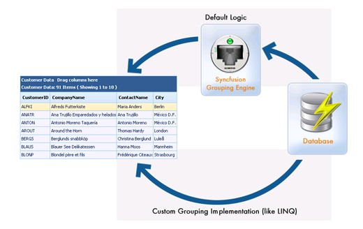

PassThroughGrouping - Querying the Database
PassThrough grouping is a great way to take control of the data being retrieved from the datasource. By default, the grid would pull all the records in the underlying datasource, to be able to effectively perform grouping and calculate summaries. However, you can override this behavior using "passthrough grouping" and retrieve only the required records from the datasource, typically only the ones required to display the current page. Using this approach, the grid could be bound to millions of records, but there will only be a few records retrieved from the datasource at a time, based on the grid's page size.
PassThrough grouping can be implemented against any datasource, using any data retrieval technique. But, this is the most ideal technique while retrieving data through LINQ, as elaborated in the next section.
You can create a PassThroughGrouping instance using the code given below.
|
[C#]
private DataClasses1DataContext dContext; /// <summary> /// Gets the DataContext /// </summary> public DataClasses1DataContext DContext { get { if ( dContext == null ) dContext = new DataClasses1DataContext( ); return dContext; } }
private PassThroughGroupingResult GetOrders( ) { List<Order> orders = ( from o in DContext.Orders select o ).ToList( ); return new PassThroughGroupingResult( "Order", orders, typeof( Order ), orders.Count( ) ); } |
|
[VB.NET]
Private DContext As GridModelClassesDataContext
Public ReadOnly Property GridModelClassesDataContext() As Content 'Public ReadOnly Property DContext() As GridModelClassesDataContext Get If DContext Is Nothing Then DContext = New GridModelClassesDataContext() End If Return DContext End Get End Property
Private Function GetOrders() As Syncfusion.Grouping.PassThroughGroupingResult Dim orders As List(Of Order) = (From o In DContext.Orders Select o).ToList() Return New Syncfusion.Grouping.PassThroughGroupingResult("Order", orders, GetType(Syncfusion.Grouping.PassThroughGroupingResult), orders.Count()) End Function |

Figure 139
The PassThroughGrouping class accepts several different types of variables in its constructor, allowing various types of initialization with the IEnumerable list. You can even load the nested tables on demand into the Grid engine. The Grid engine would first generate a shallow copy of the child table with only columns and no data. Then when the record gets expanded, it will raise the delegate provided with the NestedQueryDelegateHandler.
Consider the following code for getting the 'OrderDetails' child table.
|
[C#]
private PassThroughGroupingResult GetOrderDetails( ) { return new PassThroughGroupingResult( "Order_Details", GetOrderDetails, typeof( Order_Detail ) ); }
private IEnumerable GetOrderDetails( object[ ] keys, out object totals ) { List<Order_Detail> orderDetails = ( from o in DContext.Order_Details where o.OrderID == ( int ) keys[ 0 ] select o ).ToList( ); totals = orderDetails.Count( ); return orderDetails; } |
|
[VB.NET]
Private Function GetOrders() As Syncfusion.Grouping.PassThroughGroupingResult Dim orders As List(Of Order) = (From o In DContext.Orders Select o).ToList() Return New Syncfusion.Grouping.PassThroughGroupingResult("Order", orders, GetType(Syncfusion.Grouping.PassThroughGroupingResult), orders.Count()) End Function
Private Function GetOrderDetails() As Syncfusion.Grouping.PassThroughGroupingResult Return New Syncfusion.Grouping.PassThroughGroupingResult("Order_Details", GetOrderDetails, GetType(Syncfusion.Grouping.PassThroughGroupingResult)) End Function
Private Function GetOrderDetails(ByVal keys As Object(), <System.Runtime.InteropServices.Out()> ByRef totals As Object) As IEnumerable Dim orderDetails As List(Of Order_Detail) = (From o In DContext.Order_Details Where o.OrderID = CInt(keys(0)) Select o).ToList() totals = orderDetails.Count() Return orderDetails End Function |
"GetOrderDetails" is the NestedQueryDelegate that would be called at run time when the parent record is getting expanded, thus enabling real fast updates with the nested tables.